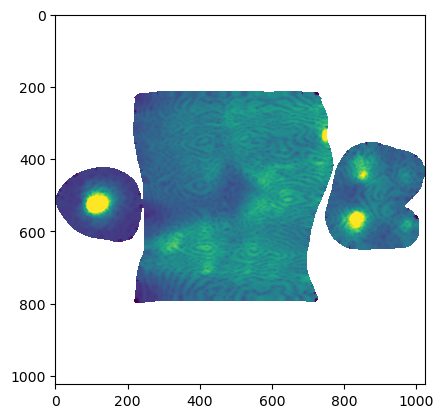

mesh = tcmesh.ObjMesh.read_obj("datasets/movie_example/initial_uv.obj")Warning: readOBJ() ignored non-comment line 4:
o mesh_01_cylinder_seams_uvWhen analyzing data in cartographic projections, we have to make sure we are always accounting for mapping distortion and curvature. This notebook builds the relevant tools, including for vector calculus on curved surfaces.
When analyzing quantities computed in the UV cartographic projection (e.g. cell areas, orientation, tissue flow speed obtained from optical flow), you need to account for the cartographic projection. I generally recommend doing this by mapping every object back to 3d as soon as possible. This will minimize the number of possible errors. Example: you want to evaluate the angle between two edges of a cell. 1. You could do so in the UV map using the induced metric (see below). This is error-prone: did you calculate the metric correctly? Did you use the metric or its inverse? 2. You could map back the location of the cell vertices to 3d, and then calculate the edge vectors in 3d. This minimizes possibilities for confusion.
A map between two meshes is defined on a per-triangle basis (i.e. which triangle of the “source” mesh gets mapped to which one of the “target” mesh). The map between a 3d mesh and its UV unwrapping is a special case of this.
The mapping distortion is described by the Jacobian, defined per triangle. For more details, see here. The simplest kind of mapping distortion is area distortion, which is simply the ratio of (target triangle area) / (source triangle area).
In general, many mapping-related quantities, like area distortion, are most easily computed per triangle. We can “move” them to mesh vertices by interpolation. If we keep all of our quantities of interest defined per vertex, it will simplify bookkeeping.
The tools in this notebook only work for triangular meshes! Only for triangular meshes is the per-face map distortion uniquely defined.
compute_per_vertex_area_distortion (source_vertices, source_faces, target_vertices, target_faces, evaluate_at='source', cutoff=1e-15)
*Compute area distortion factor for a map between meshes.
The result is evaluated at the vertices of the source or target mesh. Faces must be such that faces[i] is mapped to target_faces[i]. This function computes (target area / source area).
This can be used to (a) visualize map distortion and (b) correct for it, for example by using it as a weighting factor for averages.
Example (compute distortion of UV map): compute_per_vertex_area_distortion(mesh.texture_vertices, mesh.texture_tris, mesh.vertices, mesh.tris)*
| Type | Default | Details | |
|---|---|---|---|
| source_vertices | np.array | Source mesh vertices. | |
| source_faces | np.array of shape (…, 3) | Spurce mesh faces. Must be triangular. | |
| target_vertices | np.array | Target mesh vertices. | |
| target_faces | np.array of shape (…, 3) | Target mesh faces. Must be triangular. | |
| evaluate_at | str | source | Whether to evaluate the result at the source or target mesh vertices. |
| cutoff | float | 1e-15 | Numerical cutoff for small target areas (avoid 0 division error) |
| Returns | np.array | Area distortion factor (source area/target area) evaluated on source or target mesh vertices. |
impute_boundary_values (per_vertex_field, tris, fill_value=nan)
Replace values of per_vertex_field at boundary vertices by average of its non-boundary neighbors. If there are no non-boundary neighbors, use fill_value.
get_all_boundary_vertices (tris)
Get list of all boundary vertices. Not guaranteed to be in any order
get_area_distortion_in_UV (mesh, uv_grid_steps=1024, map_back=True)
*Get area distortion of UV map, interpolated across the UV square.
Used to measure area distortion of your cartographic mapping. This can be used to (a) visualize map distortion and (b) correct for it, for example by using it as a weighting factor for averages.
Assumes the map \(x,y,z \mapsto u,v\) to be invertible. This is not guaranteed - you can create overlapping UV coordinates in blender. The provided UV coordinates will be mapped back to [0, 1]^2 if map_back is True. Else, coordinates outside [0,1] are ignored.*
| Type | Default | Details | |
|---|---|---|---|
| mesh | tcmesh.ObjMesh | Input mesh with UV coordinates. | |
| uv_grid_steps | int | 1024 | Size of UV grid. Determines resolution of result. |
| map_back | bool | True | Map back the UV coordinates to [0,1]^2. Else, coordinates outside [0,1] are ignored. |
| Returns | np.array of shape (uv_grid_steps, uv_grid_steps) | Area distortion across [0,1]^2 UV grid, with uniform step size. UV positions that don’t correspond to any value are set to np.nan. |
Warning: readOBJ() ignored non-comment line 4:
o mesh_01_cylinder_seams_uvdistortion_interpolated = get_area_distortion_in_UV(mesh)
plt.imshow(distortion_interpolated, vmin=0, vmax=0.75*1e7)/home/nikolas/Documents/UCSB/streichan/numerics/code/python_code/jupyter_notebooks/blender-tissue-cartography/blender_tissue_cartography/interpolation.py:217: RuntimeWarning: UV map has self-intersections, 33 flipped triangles. Try use_fallback=True?
warnings.warn("UV map has self-intersections, {} flipped triangles. Try use_fallback=True?".format(
compute_per_vertex_angle_distortion (source_vertices, source_faces, target_vertices, target_faces, evaluate_at='source', cutoff=1e-15)
*Compute angle distortion for a map between meshes.
The result is evaluated at the vertices of the source or target mesh. Faces must be such that faces[i] is mapped to target_faces[i]. This function computes np.abs(target angles - source angles), averaged over each triangle (in radians).
This can be used to visualize map distortion.
Example (compute distortion of UV map): compute_per_vertex_angle_distortion(mesh.texture_vertices, mesh.texture_tris, mesh.vertices, mesh.tris)*
| Type | Default | Details | |
|---|---|---|---|
| source_vertices | np.array | Source mesh vertices. | |
| source_faces | np.array of shape (…, 3) | Spurce mesh faces. Must be triangular. | |
| target_vertices | np.array | Target mesh vertices. | |
| target_faces | np.array of shape (…, 3) | Target mesh faces. Must be triangular. | |
| evaluate_at | str | source | Whether to evaluate the result at the source or target mesh vertices. |
| cutoff | float | 1e-15 | |
| Returns | np.array | Area distortion factor (source area/target area) evaluated on source or target mesh vertices. |
In general, in addition to getting inflated or shrunk, during the mapping process, a triangle is also rotated and sheared. The full transformation properties are encoded by the Jacobian matrix.
You need the Jacobian for example to map vectors (e.g. displacement from optical flow) that you calculated in UV space back into 3d.
Using the tcinterp.interpolate_per_vertex_field_to_UV, you can interpolate the Jacobian from mesh vertices into the whole UV square.
A = source_vertices[source_faces]
B = target_vertices[target_faces]
A = (A.transpose((1,0,2)) - A.mean(axis=1)).transpose((1,0,2))
B = (B.transpose((1,0,2)) - B.mean(axis=1)).transpose((1,0,2))
A.shape, B.shape((40420, 3, 2), (40420, 3, 3))jac = np.stack([np.linalg.lstsq(a, b, rcond=None)[0].T for a,b in zip(A, B)]) # vectorize?
i = 100
np.linalg.norm(A[i] @ jac[i].T - B[i], axis=-1) / np.linalg.norm(B[i], axis=-1)array([0., 0., 0.])compute_per_vertex_jacobian (source_vertices, source_faces, target_vertices, target_faces, evaluate_at='source')
*Compute Jacobian factor for a map between meshes.
Faces must be such that faces[i] is mapped to target_faces[i]. This function computes the Jacobian mapping tangent vectors of the source mesh to tangent vectors of the target mesh. The result is evaluated at the vertices of the source mesh.
Important: after you apply the per-vertex Jacobian, you may still need to permute the result, defined per source vertex, so it is defined per target mesh, e.g. using mesh.get_vertex_to_texture_vertex_indices() if mapping from 3d to UV.
Example (compute distortion of UV map): compute_per_vertex_jacobian(mesh.texture_vertices, mesh.texture_tris mesh.vertices, mesh.tris)*
| Type | Default | Details | |
|---|---|---|---|
| source_vertices | np.array | Source mesh vertices. | |
| source_faces | np.array of shape (…, 3) | Spurce mesh faces. Must be triangular. | |
| target_vertices | np.array | Target mesh vertices. | |
| target_faces | np.array of shape (…, 3) | Target mesh faces. Must be triangular. | |
| evaluate_at | str | source | Whether to evaluate the result at the source or target mesh vertices. |
| Returns | np.array | Jacobian. Shape is (n_vertices, d_target, d_source), where d is the spatial dimension (e.g. 2, 3). |
compute_per_face_jacobian (source_vertices, source_faces, target_vertices, target_faces)
*Compute Jacobian factor for a map between meshes.
Faces must be such that faces[i] is mapped to target_faces[i]. This function computes the Jacobian mapping tangent vectors of the source mesh to tangent vectors of the target mesh. The result is evaluated at the mesh faces.
Example (compute distortion of UV map): compute_per_vertex_jacobian(mesh.texture_vertices, mesh.texture_tris mesh.vertices, mesh.tris)*
| Type | Details | |
|---|---|---|
| source_vertices | np.array | Source mesh vertices. |
| source_faces | np.array of shape (…, 3) | Spurce mesh faces. Must be triangular. |
| target_vertices | np.array | Target mesh vertices. |
| target_faces | np.array of shape (…, 3) | Target mesh faces. Must be triangular. |
| Returns | np.array | Jacobian. Shape is (n_faces, d_target, d_source), where d is the spatial dimension (e.g. 2, 3). |
jac = compute_per_vertex_jacobian(mesh.texture_vertices, mesh.texture_tris, mesh.vertices, mesh.tris)
jac.shape(20623, 3, 2)# the product of the Jacobian singular values will give you the area distortion
np.prod(np.linalg.svd(jac).S, axis=1) / np.abs(area_distortion)array([0.99769177, 0.99467172, 0.99815593, ..., 1. , 0.99925048,
1. ])The induced metric is defined via \(g = J^T \cdot J\) where \(J\) is the Jacobian of the map from UV-space to 3d space.
Note: when doing calculations like those shown below, np.einsum is invaluable.
get_induced_metric (mesh)
*Compute induced metric, evaluated at textures vertices.
See https://en.wikipedia.org/wiki/Induced_metric.*
| Type | Details | |
|---|---|---|
| mesh | tcmesh.ObjMesh | Mesh. Must have texture map defined |
| Returns | np.array of shape (n_texture_vertices, 2, 2) | Induced metric. |
get_metric_angle (vf1, vf2, g)
Compute angle in radians between two vector fields (shape (…, d)) in degrees using metric g (shape (…, d, d)).
get_metric_norm (vf, g)
Compute norm of vector field vf (shape (…, d)) using metric g (shape (…, d, d)).
# The determinant of the metric gives the local area distortion
np.sqrt(np.linalg.det(g)) / np.abs(area_distortion)array([0.99769177, 0.99467172, 0.99815593, ..., 1. , 0.99925048,
1. ])# Using the metric, and np.einsum, you can calculate norms and angles of vectors
vf = np.random.normal(size=jac[:,0].shape, scale=0.1)
np.sqrt(np.einsum('...i,...ij,...j->...', vf, g, vf))array([ 501.87392309, 393.09353282, 829.11721834, ...,
25007.79899916, 56659.93322926, 97498.61554437])array([ 501.87392309, 393.09353282, 829.11721834, ...,
25007.79899916, 56659.93322926, 97498.61554437])How to generalize the familiar operations of vector calculus (div, rot, grad, etc) to curved surfaces is a key part of differential geometry. There are different approaches for doing surface differential geometry numerically:
Here, we take a less elegant, but simpler approach that takes advantage of the fact that our surfaces are embedded in 3d cartesian space. All vector and tensor fields are mapped back into 3d so that their components are defined in \(x,y,z\) coordinates. Then we can imagine “extending” from the surface into full 3d space by defining them to be constant along the local surface normal. Then we are back to normal vector calculus!
In practice, we don’t need to do this extension explicitly. We can compute the derivative of any quantity defined on mesh vertices in such a way that the derivative along the normal direction is 0. This is implemented by standard “finite-element” gradient operators. See here: https://libigl.github.io/libigl-python-bindings/tut-chapter1/#gradient
tri_grad (field, vertices, faces, grad_matrix=None)
*Calculate the gradient of a function defined on vertices of a triangular mesh.
If a vector or tensor field is passed, the gradient is applied to each component individually.
See https://libigl.github.io/libigl-python-bindings/tut-chapter1/#gradient*
| Type | Default | Details | |
|---|---|---|---|
| field | np.array of shape (#vertices,…) | scalar, vector, or tensor field defined at mesh vertices | |
| vertices | np.array of shape (#vertices, dim) | vertices. | |
| faces | np.array of shape (#faces, 3) | Triangular faces. | |
| grad_matrix | NoneType | None | Gradient operator. The default is None (calculate from vertices, faces). |
| Returns | np.array of shape (#vertices, dim, …) | Gradient of scalar function/tensor, defined on vertices. Axis 1 comprises the gradients along x,y,z. |
Warning: readOBJ() ignored non-comment line 4:
o mesh_01_cylinder_seams_uv# get some random fields - eigenfunctions of the laplacian
laplacian = igl.cotmatrix(mesh.vertices, mesh.tris)
mass = igl.massmatrix(mesh.vertices, mesh.tris)
eigen_vals, eigen_vecs = sparse.linalg.eigsh(-laplacian, M=mass, k=10, which="SM")
eigen_vals, eigen_vecs = (eigen_vals[1:], eigen_vecs[:, 1:])
eigen_vals = eigen_vals / eigen_vals[0]
eigen_vecs = eigen_vecs / np.abs(eigen_vecs).mean()
scalar_field = eigen_vecs[:,0]
vector_field = eigen_vecs[:,:3]
tensor_field = eigen_vecs.reshape((-1, 3, 3))# Here is how you would map the gradients to 2d. You first need to apply the Jacobian,
# and then you still need to reindex.
jac = compute_per_vertex_jacobian(mesh.vertices, mesh.tris, mesh.texture_vertices, mesh.texture_tris, )
scalar_gradient_projected = np.einsum('vij,vj->vi', jac, scalar_gradient)[mesh.get_vertex_to_texture_vertex_indices()]get_normal_projector (vertices=None, faces=None, normals=None)
*Get projection matrix that removes components normal to the surface
Mathematically, 1-n.n^T where n is the unit surface normal. Defined per vertex.*
| Type | Default | Details | |
|---|---|---|---|
| vertices | NoneType | None | vertices. If None, must supply normals |
| faces | NoneType | None | Triangular faces. If None, must supply normals |
| normals | NoneType | None | If None, recompute normals from vertices and faces |
| Returns | np.array of shape (#vertices, dim, dim) | Projector |
separate_tangential_normal (field, vertices=None, faces=None, normals=None)
*Separate tangential and normal components of field defined at vertices.
Vector and rank-2 tensor fields are supported. For a rank-2 tensor, normal-tangential cross components are discarded.*
| Type | Default | Details | |
|---|---|---|---|
| field | np.array of shape (#vertices, dim) or (#vertices, dim, dim) | Vector or rank-2 tensor field defined at vertices | |
| vertices | NoneType | None | vertices. If None, must supply normals |
| faces | NoneType | None | Triangular faces. If None, must supply normals |
| normals | NoneType | None | If None, recompute normals from vertices and faces |
| Returns | np.array, np.array | tangential_component : np.array of shape (#vertices, dim) or (#vertices, dim, dim) normal_component : np.array of shape (#vertices, dim) or (#vertices, dim, dim) |
get_grad_perp (field, vertices, faces, normals=None)
*Calculate the gradient of a scalar field, rotated by 90 deg around the surface normal.
As occurs e.g. when calculating vector field from stream function.*
| Type | Default | Details | |
|---|---|---|---|
| field | np.array of shape (#vertices,) | Scalar field defined at mesh vertices | |
| vertices | np.array of shape (#vertices, dim) | vertices. | |
| faces | np.array of shape (#faces, 3) | Triangular faces. | |
| normals | NoneType | None | If None, recompute normals from vertices and faces. sign of normals determines sense of rotation. |
| Returns | np.array of shape (#vertices, dim) | 90-degree rotated gradient of scalar field. |
get_rot (field, vertices, faces, normals=None)
*Calculate tangent-plane rotation of vector field defined on vertices of triangular mesh.
This result is a scalar, equal to (Nabla x field).normals*
| Type | Default | Details | |
|---|---|---|---|
| field | np.array of shape (#vertices, dim) | vector field defined at mesh vertices | |
| vertices | np.array of shape (#vertices, dim) | vertices. | |
| faces | np.array of shape (#faces, 3) | Triangular faces. | |
| normals | NoneType | None | If None, recompute normals from vertices and faces |
| Returns | np.array of shape (#vertices,) | Curl of vector field. |
get_div (field, vertices, faces, normals=None)
Calculate tangent-plane divergence of vector field defined on vertices of triangular mesh.
| Type | Default | Details | |
|---|---|---|---|
| field | np.array of shape (#vertices, dim) | vector field defined at mesh vertices | |
| vertices | np.array of shape (#vertices, dim) | vertices. | |
| faces | np.array of shape (#faces, 3) | Triangular faces. | |
| normals | NoneType | None | If None, recompute normals from vertices and faces |
| Returns | np.array of shape (#vertices,) | Divergence of vector field. |
array([-0.00132147, -0.00133631, -0.00139445, ..., -0.01190545,
-0.01149585, -0.00547986])